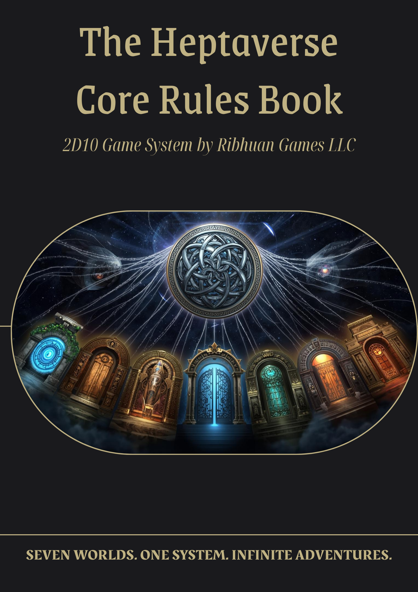

 The Framework of Everything
The Framework of Everything
Cosmology of
the Heptaverse
Seven Attempts · Three Paths · One Unending Darkness
"The cosmos is neither chaotic nor ordained, but a great wheel turning upon itself — spokes of possibility radiating from a central truth. To understand the planes is to glimpse the architecture of existence itself." — Archmage Kenwallader the Grey
Triglav, the Creator
Triglav does not rule the cosmos. Triglav is the cosmos — or at least the impulse behind it. A being of True Neutrality who exists at the bleeding edge between the Void and the realm of those who existed before any universe, Triglav is neither god nor force nor philosophy. Triglav is the act of creation itself, divorced from outcome, unconcerned with success.
This is why Triglav is never depicted directly in temples or texts. The three-faced figure, the three interlocking circles — these are not portraits. They are approximations of something mortal minds cannot hold. Each face regards a different direction through time: the universe that was destroyed, the universe that exists now, and the universe that has not yet been permitted to begin.
Triglav's domains span Creation, Fate, Knowledge, Time, and Void — not as a list of powers, but as a description of what Triglav is made from. The Void is not Triglav's enemy. It is Triglav's raw material. The entropy that threatens all existing planes is not an opposing force — it is the medium through which Triglav has always worked, the ocean in which new universes are born like islands.
What mortals call the Heptaverse is, in Triglav's reckoning, merely the seventh draft.
The Six Abandoned Universes
Each cosmos Triglav created was an experiment. Each failed in its own particular way.
Their ruins persist — as para-elemental echoes, as the void between planes, as the horror in Ring 13.
The first universe was governed solely by elemental Fire — a cosmos of pure transformation with no counterweight. Every material burned. Every thought ignited. The plane collapsed inward when the last cold thing was consumed and Fire had nothing left to become. Its remnants are the Plane of Fire (Ignium) and the scattered Ash Wraiths who remember warmth.
The second attempt corrected for heat by introducing Water as the universal constant. Without tension, without opposition, the oceans simply deepened until no shore remained. Life arose and immediately stilled — placid and eternal and utterly without ambition. What persists is the Plane of Water (Aquium) and the Leviathans who still recall a cosmos with no sky.
The third cosmos introduced Air and motion — which worked too well. Every structure dispersed. Every idea floated free of the mind that conceived it. The gods of this attempt simply drifted apart until there were no gods, only wind and the memory of intention. Its echo is the Plane of Air (Aerium) and the Whisper Sprites who carry fragments of the lost divine.
Triglav tried permanence. The fourth universe was Earth made absolute — mountains so old they became the concept of mountain, stone so dense that time itself slowed around it. History accreted but could never pass. The world eventually had no present tense, only the past pressing down. The Plane of Earth (Terrium) carries this weight, and the Crystal Entities still cannot change.
For the fifth attempt, Triglav made Time itself the primary element. Every choice immediately split reality into branching timelines. Each timeline spawned more. The universe multiplied itself into incoherence — an infinite lattice of contradictory presents with no thread of causality remaining. The Plane of Time (Temporum) and the Paradox Spirits are all that persists of this shattered everything.
The sixth universe was an attempt at pure potential — a cosmos built from Void, where anything could exist because nothing was predetermined. But Void without counterweight became entropy without limit. This is the progenitor of the black holes in the current Plane of Void (Vacum), and the source of the Entropy Heralds who still seek to finish what the sixth cosmos began. What lurks in Ring 13 of Tuonela may be its last god — still alive, still hungry.
The seventh attempt — this cosmos, the Heptaverse — incorporates all six elements in balance: Fire, Water, Air, Earth, Time, and Void. It is the first universe Triglav has built that could, theoretically, sustain itself. Theoretically.
Three Pathways Through the Setting
The Heptaverse is not one story. It is one cosmos — and the games of Ribhian Games chart three distinct paths through its history, its horrors, and its wonders.
The Heptaverse is young enough that gods still walk among mortals and the planar structure is vibrant and contested. Ribhus Prime sits at the centre of a great cosmic wheel, its peoples navigating the tensions between divine factions, elemental forces, and the creeping awareness that their world is the seventh attempt at existence — and may not be the last.
The seams of the Heptaverse are showing. Tendrils of the sixth cosmos — the Silent Dark — push through the fabric of reality in forms mortals mistake for madness, plague, and nightmare. These are not metaphors. The cosmos is bleeding, and the things bleeding through it are older than Triglav's seventh attempt and hostile to everything it contains.
Beyond Ribhus Prime, beyond the City of Cornovii, beyond the Outer Planes and the island realms in the Void — there are structures that do not belong to this cosmology. Travelers who reach the true edges of the Heptaverse find themselves not at a boundary but at a question: what is on the other side of the black holes that consume even the fabric of the Void itself?
Beyond the Black Hole
The Plane of Void contains black holes that consume even the fabric of the plane itself.
Scholars who have studied what lies on the other side have not returned to share their findings.
The Plane of Void (Vacum) exists in direct opposition to the Plane of Time — and where they meet, the interaction is described by scholars as "dangerous to all existence." This is an understatement. The Void grows. Not slowly and not randomly, but with the patience of something that has unmade five universes before and knows exactly how this one will end if left unattended.
Within the Void drift island realms — dÚsachtach, Farmad, Pholaitíochta — each ruled by a god with neutral-to-evil tendencies, each serving as a buffer zone between the Void's expansion and Ribhus Prime. The river of Pholaitíochta feeds not just the Dream Realm but the swamps of Hatteras itself. These are not coincidences of geography. They are containment structures.
And beneath it all — in Ring 13 of Tuonela, the ring that Hefig himself will not enter, the ring that inspires fear even in the God of Pure Evil — something waits. The current scholarly hypothesis is that whatever inhabits Ring 13 is the last surviving consciousness of the sixth cosmos: the final god of the Silent Dark, imprisoned rather than destroyed because Triglav could not destroy it, and because its destruction would release something worse.
Tears in the Plane of Void where the sixth cosmos bleeds through. Each one is expanding. Each one is a different size. The largest, called the Null Point, is the theoretical centre of the Void — and nothing that has approached it has returned with consistent memories of doing so.
Void servants who seek universal dissolution. Unlike lesser Void elementals, Entropy Heralds appear to pursue a strategy — targeting elemental nodes, corrupting Time-adjacent locations, and systematically testing the planar barriers. They do not attack at random. They probe for weaknesses.
Hefig rules the first nine rings of the Thirteen Nine Rings. The outer three rings beyond his reach are a mystery. The thirteenth inspires in Hefig — God of Pure Evil, master of diabolic contracts — something indistinguishable from terror. Scholars speculate it contains a consciousness that predates the current cosmos entirely.
Para-elemental planes are dissolving at their boundaries with the Void. Erosion — the Void/Earth intersection — is consuming territory. Vacuum — the Void/Air intersection — is spreading silence where there was once sound. The Heptaverse is being unmade from its edges inward, slowly enough that most mortals have not noticed, quickly enough that the gods have.
Triglav does not intervene. This is either because Triglav trusts the architecture of the seventh cosmos to hold — or because Triglav is already preparing the eighth. Mortals must decide which possibility is more horrifying.
Explore the Heptaverse
Seven universes. Three paths. One darkness pressing in from outside the edges of everything. The games of Ribhian Games invite you to live inside the seventh attempt at existence — and decide whether it deserves to be the last.
Brutal survival in the primordial Heptaverse, where the gods are still learning what they are and mortals claw meaning from the dark.
The Mythic AgeThe flagship setting. A world of intrigue, divine politics, and the 2d10 system at the centre of the great cosmic wheel.
The UnravellingA dying civilisation picking through the ruins of a world the entropy tide has already reached. Horror in the margins of a collapsing cosmos.
The Outer ReachesPulp science fantasy at the edge of the Heptaverse, where the technology of forgotten planes meets the chaos of the outer dark.
The UnravellingInto the depths — literal and psychological — as the Void presses up from beneath and the distinction between dungeon and abyss dissolves.
The UnravellingCosmic horror in a fog-shrouded world where the things bleeding through from the sixth cosmos have learned to wear familiar faces.
The Outer ReachesAt the absolute centre of something — a planet, a plane, or the Void itself — truths about the Heptaverse's architecture that were never meant to be found.